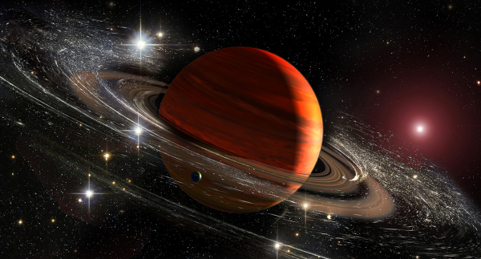
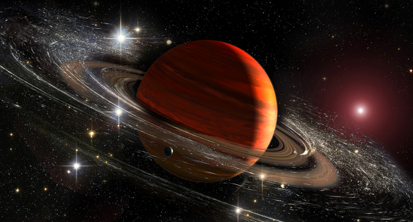

Satürn : Görkemli Bir Gezegen
Uzaya Yolculukların Popüler Hedefi
Satürn, uzaya yolculuklar için popüler bir hedef olmasının yanı sıra, görkemli bir gezegendir ve güneş sistemi içinde bulunan diğer gezegenlere göre benzersiz bir yapıya sahiptir. Bu nedenle , Satürn hakkında araştırma yapmak ve bu görkemli gezegeni daha yakından tanımak isteyen uzay meraklıları için harika bir fırsattır.
 
